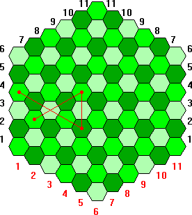

Zadania trzeciego etapu Konkursu Informatycznego dla gimnazjalistów LOGIA 12
Zadanie 1 (Suma liczb).
Antek lubi dodawać liczby. Zuzia wymyśliła dla niego nowe zadanie. Powinien znaleźć najmniejszą liczbę całkowitą dodatnią, która nie jest sumą liczb znajdujących się na danej liście. Napisz funkcję SUM :liczby, której wynikiem jest szukana liczba. Parametr :liczby jest uporządkowaną listą liczb całkowitych dodatnich nie większych niż 1000 składającą się maksymalnie ze 100 liczb.
Przykłady:
| Wynikiem | SUM [1 2 3 4 100] | jest 11. |
| Wynikiem | SUM [1 1 2 3 5 18 21] | jest 13. |
Zadanie 2 (Wieża).
Strzałki na rysunku 1 opisują możliwe kierunki ruchu wieży na planszy sześciokątnej. Napisz funkcję POLE :n :ruchy, parametr :n - oznacza liczbę sześciokątów na jednym boku i może przyjmować wartości od 2 do 1000, parametr :ruchy jest poprawną listą ruchów wieży - pól, na których zatrzymuje się wieża. Pola są reprezentowane przez dwuelementową listę liczb czerwona czarna. Liczba czerwona określa numer kolumny, a liczba czarna numer wiersza (sposób numeracji wierszy zaznaczony jest na rysunku 2). Wynikiem funkcji jest pierwsze pole odwiedzone przez wieżę po raz drugi (wieża niekoniecznie musi się na nim zatrzymać). Jeśli żadne pole nie zostanie odwiedzone dwa razy wynikiem funkcji jest 0. |
|
Przykłady:
| Wynikiem | POLE 4 [[4 7] [5 6] [5 4] [7 2]] | jest 0 (patrz rys. 3) |
| Wynikiem | POLE 6 [[2 3] [5 6] [5 4] [1 4]] | jest [3 4] (patrz rys. 4) |
|  | ||
| Rys. 2 | Rys. 3 | Rys. 4 |
Zadanie 3 (Kulki).
Ola przygotowuje dekoracje do ozdobienia klasy na dzień dziecka. Z kulek w kolorach czerwonym (r), zielonym (g), niebieskim (b) i żółtym (y) tworzy łańcuchy. Na spotkaniu klasowym ustalono, że dwie kulki w tym samym kolorze nie mogą występować obok siebie.
Pomóż Oli projektować łańcuchy i napisz funkcję KULKI :lk, której wynikiem jest posortowana lista słów reprezentujących łańcuchy, jakie można zbudować z wszystkich dostępnych kulek. Parametr :lk jest czteroelementową listą liczb określających odpowiednio liczbę kulek czerwonych, zielonych, niebieskich i żółtych. Maksymalna liczba wszystkich kulek wynosi 10.
Przykład:
| Wynikiem | KULKI [2 1 1 0] | jest [brgr grbr rbgr rbrg rgbr rgrb]. |
Poniższy rysunek ilustruje wszystkie prawidłowe łańcuchy z przykładu:
Zadanie 4 (EURO).
Jasio wygrał konkurs organizowany przez OEIiZK, w którym nagrodą jest zakwaterowanie razem z wybraną drużyną oraz bilety wstępu na mecze tej drużyny podczas mistrzostw Europy w piłce nożnej. Drużyny rozgrywają mecze w różnych miastach, wybrały też bazy zakwaterowania niekoniecznie w miejscu rozgrywania meczy. Jasio chciałby jak najkrócej podróżować. Pomóż mu podjąć decyzję, której drużynie kibicować. Napisz funkcję EURO :bazy :mecze :czasy, której parametry oznaczają:
- :bazy - lista baz drużyn, baza to dwuelementowa lista złożona z nazwy drużyny i nazwy miasta zakwaterowania,
- :mecze - lista meczy do rozegrania, mecz to trójelementowa lista złożona z nazw drużyn rozgrywających mecz oraz nazwy miasta, w którym grają,
- :czasy - lista połączeń pomiędzy miastami, połączenie to trójelementowa lista złożona z nazw miast oraz czasu podróży pomiędzy nimi.
Wynikiem funkcji jest nazwa drużyny, której Jasio powinien kibicować. Jeśli jest kilka równorzędnych drużyn, wynikiem jest dowolna z nich. Zakładamy poprawność danych, czyli każda drużyna ma jedną bazę, rozgrywa co najmniej jeden mecz oraz istnieją połączenia pomiędzy bazami i miejscami rozgrywania meczy.
Przykłady:
| Wynikiem | EURO [[A M1][B M2][C M1][D M3]]
[[A B M1][A C M1][A D M3][B C M1][B D M3] [C D M3]] [[M1 M2 1][M1 M3 5] [M2 M3 6]] |
jest D, |
| Wynikiem | EURO [[D1 M1][D2 M2][D3 M3][D4 M4]]
[[D1 D3 M5][D2 D4 M6][D1 D2 M5][D3 D4 M6] [D1 D4 M5][D2 D3 M6]] [[M1 M5 20][M1 M6 5][M2 M5 15][M2 M6 10][M3 M5 25] [M3 M6 20] [M4 M5 20][M4 M6 20]] |
jest D2. |